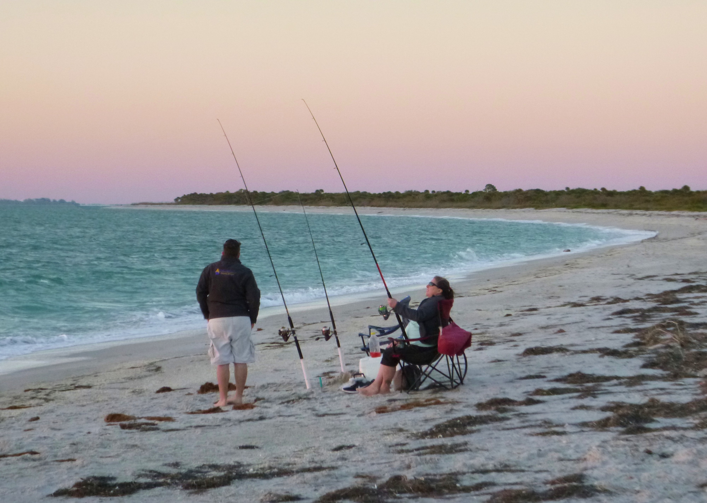
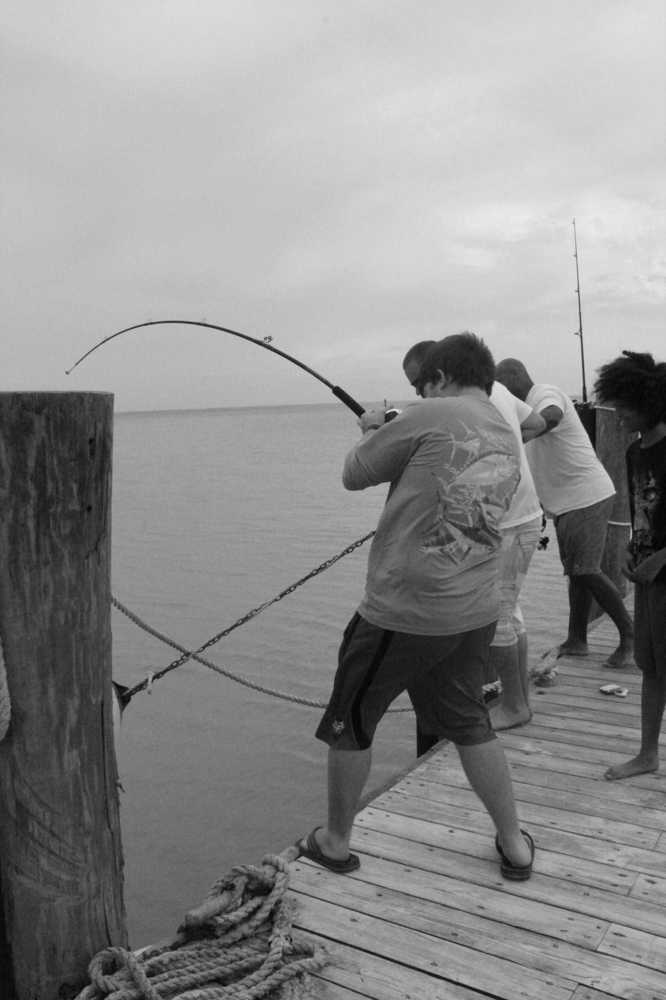

| Pensacola | St. Augustine | Dry Tortugas | Cayo Costa |
|---|
If there's one thing I'd love to be doing right now, it's fishing. Salt and fresh water fishing have become a significant part of my life. Although fresh water fishing can be fun, my heart lies in the ocean. Bigger bodies of water=bigger fish, right?
One of my favorite sport fish to catch is the Red Drum fish. The "bulls" fight with an awesome intensity and frankly, they're just a blast to hook up with.
I've had my fair share of scars as well. From being bitten by puffer fish, stingrays, redbulls, and sharks(not big), you can imagine that indeed, I do have a few. No complaints though, just more stories to share later on.
Above, you'll find some links to my favorite fishing destinations.
I've also got to give a shoutout to RedBull for making such an awesome drink that I have to have every single time I go out fishing. It just completes the experience for me. I suppose it may also just be tradition.
| A Couple Shots of Me Fishing: | |
|  |  |
|---|---|